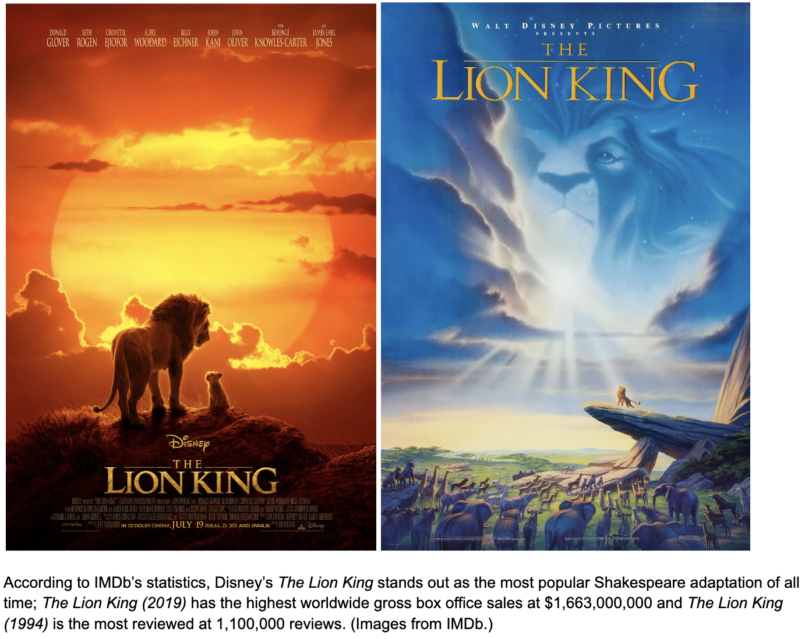

William Shakespeare is widely regarded as one of the most influential playwrights of all time; fittingly, his works have been adapted hundreds of times over, told and retold in new forms for every generation, culture, and medium. But what exactly is the shape of this greater adaptational legacy, and what can it tell us about the wider world’s relationship with these classic stories?
To explore that question, we have collected data on 425 works of film, silent film, animation, video, and TV, adapted from all 37 of Shakespeare’s plays and released between 1899 and 2021 across 31 different countries. This dataset combines curated statistics from IMDb with original observations on the faithfulness of each adaptation. While it is not an exhaustive list of all Shakespeare adaptations ever made, we can already see interesting trends emerge from this sizable sample.
First, let’s explore the relative popularity of each of Shakespeare’s plays by comparing the public reception of their adaptations. Ideally, we would make this comparison in terms of box office sales— but because many of the works on this list never had a theatrical release, and because we are primarily seeking to assess public interest in and familiarity with each source play (rather than the perceived quality of the adaptations, as may be indicated by IMDb ratings), our next best metric is number of reviews on IMDb.
The graph below shows the number of adaptations of each play with a review count higher than the minimum indicated by the sliders and an IMDb rating higher than the minimum indicated by the sliders— that is, if the first slider is set to 1000, the bars indicate how many adaptations of each play have 1000 or more reviews. Explore the popularity of each source play by adjusting the sliders.
You may have an intuitive sense of which of Shakespeare’s plays are the most popular based on which are commonly used as household references— particularly Romeo and Juliet, often used as shorthand for an entire genre of star-crossed romance, and Hamlet, widely referenced for its iconic “To be or not to be?” soliloquy if not necessarily for its plot as a whole. Indeed, we see that these two plays rise to the top of the pile, followed by such well-known works as Macbeth and Othello.
For comparison’s sake, let’s look at some other popularity metrics for plays which have had theatrically-released adaptations.

It is interesting to note that the plays with the (on average) highest-grossing and most-reviewed adaptations are not necessarily the highest-rated on IMDb— that distinction going to a seemingly arbitrary collection of plays including some of the more obscure Histories. While we can only speculate as to why this may be, it may simply reflect a divide in critical fervor between the passionate few who would rate and review more obscure productions out of a love for Shakespeare’s body of work, and the relatively-less-invested majority who would rate and review mainstream blockbusters which just-so-happen to be Shakespeare adaptations. If we dig down to the level of individual adaptations, the fact that most of the highest-rated productions also have review counts in the triple digits or lower (with the exception of 1994 Hamlet adaptation The Lion King, which is simulataneously the most-reviewed, 2nd-highest-grossing, and 11th-highest rated production on this list) could be seen to support this theory.
Of course, not every adaptation is created equal; the adaptations covered here range from video releases of live theater, performed as-written in period costume on the stage of the reconstructed Globe Theater itself (such as directors Jeremy Herrin and Ian Russel’s 2014 production of The Tempest); to films which place the original text of Shakespeare’s screenplay in a brand-new modern context (such as Baz Luhrmann’s 1996 film Romeo + Juliet); to films with entirely original scripts which take little more from their source than a few basic plot points (such as Gil Junger’s 1999 film 10 Things I Hate About You, a loose adaptation of The Taming of the Shrew).
So which end of this spectrum do audiences prefer? We’ve categorized each adaptation based on whether it’s faithful to the text, defined here as more-or-less adhering to the original screenplay or a direct foreign-language translation of it, and on whether it’s faithful to the context— that is, if it appears to take place in the play’s original setting and time period, allowing for best-guess visual judgments when those things aren’t explicitly stated.
Drag the bubbles to reveal which of the most-reviewed adaptations on IMDb deviate from the text of their source play, the context, or both.
We can see that most of the highest-reviewed adaptations are unfaithful to their source material in some way. In fact, the top 12 highest-reviewed works on this list — The Lion King (1994), 10 Things I Hate About You (1999), The Lion King (2019), Romeo + Juliet (1996), She's the Man (2006), West Side Story (1961), West Side Story (2021), The Lion King II: Simba's Pride (1998), Romeo Must Die (2000), My Own Private Idaho (1991), and Gnomeo & Juliet (2011) — all follow original scripts unfaithful to the text, with the exception of Romeo + Juliet which uses the original script but alters its context. This could perhaps reflect an interesting quality of Shakespeare’s legacy— that while his works are very widely recognized, they are best known for their premises rather than their actual text. As evidenced by most of these titles bearing no explicit reference to the play from which they were adapted, mass market audiences seem to enjoy Shakespeare’s plays less as stories in-and-of-themselves and more as tried-and-true plot templates: loose-but-recognizable scaffolding around which original stories can be built.
If we dig deeper into this divide between faithful and unfaithful adaptations, we can find trends in where — and perhaps why — these choices are made.
It immediately stands out that the United Kingdom tends to produce far and away more faithful adaptations than unfaithful, standing at a whopping ratio of 150 text-faithful to 19 text-unfaithful adaptations within our sample. Similarly, the ratio of context-faithful to context-unfaithful works is a heavily lopsided 135 to 28 (adding up to a lower total because this information was not available for all works). Overall, 130 of the 169 UK-produced adaptations covered by our dataset are faithful to both the original text and context of their source plays. This makes intuitive sense; Shakespeare was an Englishman, so his plays as they were written are part of English cultural history. In particular, we see that the UK produces far more adaptations of Shakespeare’s Histories (King John, Richard II, Henry IV, Henry V, Henry VI, Richard III, and Henry VIII) than any other country and that these adaptations are near-universally faithful, presumably because they are intended to be viewed as true — if fantasized — recountings of the history of the English monarchy (source: Royal Shakespeare Company). While this faithful-to-unfaithful ratio is less heavily biased for some, we also see that other Western European countries (as well as Australia) tend to produce more faithful than unfaithful adaptations, perhaps because of relatively significant cultural overlap with the UK.
By contrast, we see that countries with which the UK has a significant cultural gap tend to produce far more unfaithful adaptations. India and Japan particularly stand out in this regard: all 6 Japanese adaptations included in this dataset made significant changes to the source text, and 20 of the 27 Indian adaptations for which this information was available were unfaithful to both text and context, revising the story to take place in India with locations, character names, and the cultural context of the story altered accordingly. This also makes sense, as these alterations are likely intended to make the stories more relatable and accessible to Japanese and Indian audiences.
Perhaps surprisingly, despite significant cultural and historical overlap between the United States and the UK, adaptations produced in the US appear to be evenly split between faithful and unfaithful interpretations— of the 103 works for which this information was available, 50 are unfaithful to the original text and 53 are unfaithful to the original context. While we can only speculate as to why this might be, it seems possible that Hollywood, with its bend toward appealing to massive audiences, is particularly prone to treating Shakespeare’s works as plot templates to be refitted for mass-market appeal rather than cultural artifacts to be presented as-is.
By exploring trends in how Shakespeare’s works have been adapted and received throughout the centuries, we can better understand the legacy of his works— what new forms these stories take as they live on in cultural memory, and how that memory differs across the world.
IMDb. (n.d.). https://www.imdb.com
Histories Timeline. Royal Shakespeare Company. (n.d.). https://www.rsc.org.uk/shakespeares-plays/histories-timeline